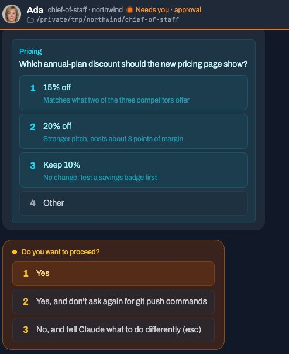
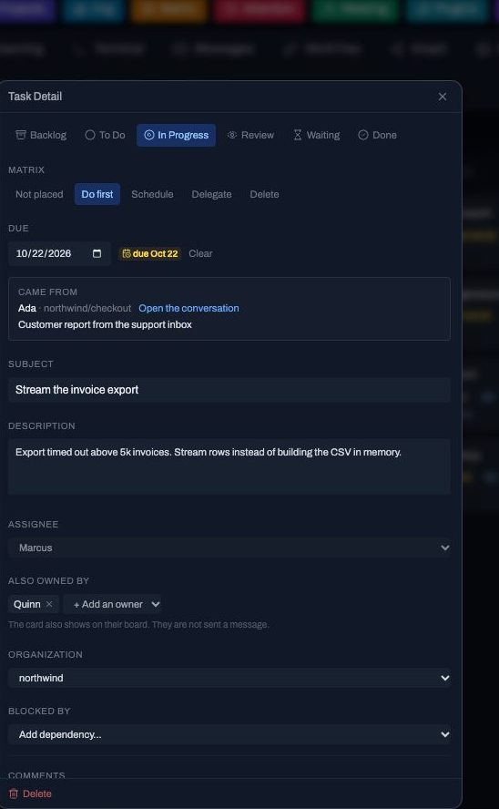

The license
The core is MIT. Free to use, including commercially. The license is not support, an SLA, or a hosted account. Read it.
Preview for review. Not the public homepage, and not a running experiment. Current homepage
AI Maestro is open-source orchestration for company agent teams. It keeps the request, the handoff, and the decision a person still makes in one place, on infrastructure you operate.
An implementer starts in the technical docs.

Companies already have agents doing useful work in separate sessions. Someone still carries the context, chases the exception, and notices which decision is waiting.
AI Maestro is the operating layer around that work. It does not replace the agents you run, and it does not turn a company into an autonomous organization. Your IT team, or an adviser, fits it to one workflow.
A request arrives, agents keep working, a person decides, and a record remains. That is the job worth adopting.
Someone names the work clearly enough that an agent can start, and clearly enough that a person knows when it is done.
The agents you already run keep their own sessions. Related work stays visible, including what is in review.
A question or an approval comes to someone who can answer it. The pause is part of the workflow.
Source, owners, and due date stay on the card, so the next session does not start from a blank page.

The core is MIT-licensed software you install on machines you operate: macOS, Linux, or Windows through WSL2. There is no account. Documented options include a local terminal, Docker, a peer mesh across hosts you add, and agents on your own AWS account. Those are your computers, not a hosted AI Maestro service.
A remote companion connects to a server you already run. iPhone is on the App Store: 30 days from the first connection, then $19.99 once for 1.x. Android is in beta. That purchase is the app, not a company subscription. Companion details.
A managed company platform, which would provision infrastructure and a company app, is unresolved: packaging, isolation, who operates it, and price. There is no signup.
Help running AI Maestro on a customer’s own cloud is also a proposal: setup, operations, training, and handover. There is no engagement, service level, partner directory, or certification, and this page does not book it.
Household and single-agent use are a later horizon, not this offer.
The core is MIT. Free to use, including commercially. The license is not support, an SLA, or a hosted account. Read it.
Claude Code, Codex, Grok Build, Copilot, and any other model are subscriptions you already pay. If memory is on, its classifier and summarizer are providers you configure. That meter is not an AI Maestro price.
You pay for the computers or cloud accounts where it runs. The companion app is a separate one-time purchase after the trial.
Running the dashboard on your machines is not the same as “nothing leaves the machine.” Model providers still process what you send them, and not every coding agent supports the same approvals. The brief lists what to verify.
Written so you can forward it. Copy puts the text on your clipboard. Nothing is uploaded.
Or select it. Printing this page includes the links.
Prepared from public product documentation on 7 November 2026. Confirm any detail in the repository before a decision. This brief is not a proposal, a quote, or a service agreement.
AI Maestro’s core is MIT-licensed software a company runs itself. It is a dashboard and orchestration layer for AI agents the company already operates: see their state, keep useful context, pass work between them, and put a question or an approval in front of a person.
It is not a hosted account. A managed company platform is planned and is not available. There is no signup.
Pick one bounded workflow. Ask whether a person can see the request, see that agents are working, make the decision the workflow still requires, and keep an artifact that records the source and the owners.
The page above shows that sequence with screenshots from AI Maestro’s own demo company, Northwind Labs. The agents in that demo are scripted. Treat the pictures as product views, not as a customer outcome.
curl -fsSL aimaestro.sh/install | bashThe dashboard in a default install opens at http://localhost:23000. That address is on the machine you installed, not a public service.